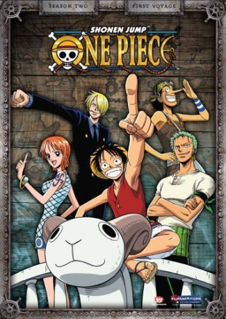

")
 
 IMDB-Wertung: 8.6 / 10
IMDB-Wertung: 8.6 / 10  Metascore:
Metascore: 
Der mächtigste und gefürchtetste Piratenkönig aller Zeiten, Gold Roger, war bekannt dafür, die wertvollsten Schätze der Welt zu besitzen. Das Versteck dieser begehrten Kostbarkeiten, genannt "One Piece", hat er jedoch bis zu seinem Tode nicht verraten. Seitdem fahren viele Abenteurer zur See, um Hinweise auf den Verbleib von "One Piece" zu sammeln.Auch der junge Abenteurer Monkey D. Ruffy will den Schatz suchen. Als er eines Tages eine Gum-Gum-Frucht isst, ändert sich sein Leben schlagartig. Auf einmal kann er nicht mehr schwimmen, dafür aber seinen Körper fast unendlich dehnen und verknoten, als wäre er aus Gummi. Ruffy startet ein hartes Training und stellt sich seine eigene Mannschaft zusammen, bestehend aus der Diebin Nami, dem Piratenjäger Lorenor Zorro, dem Lügner Lysop, dem Koch Sanji und dem Rentier Chopper. Können sie "One Piece" finden? Das Abenteuer beginnt...
Jahr: 1999
Dauer: 20 Minuten
FSK:
Land: Japan Studio: RTL II FernsehenTonspuren:
Untertitel:
Auflösung: SD (640x480) Größe: 175 MB
Genre: Action, Drama, Komödie, Abenteuer, Fantasy, Animation/Trick, Liebe, TV-Serie
Regisseur: Munehisa Sakai, Kônosuke Uda, Hiroaki Miyamoto, Junji Shimizu, Mamoru Hosoda
Drehbuch: Eiichiro Oda, Bonny Clinkenbeard, Yoshiyuki Suga, Sean Whitley, Eric Vale
Soundtrack:
Darsteller:
 Colleen Clinkenbeard als Monkey D. Luffy
Colleen Clinkenbeard als Monkey D. Luffy Sonny Strait als Usopp
Sonny Strait als Usopp Eric Vale als Sanji
Eric Vale als Sanji Brina Palencia als Tony Tony Chopper
Brina Palencia als Tony Tony Chopper Erica Schroeder als Monkey D. Luffy
Erica Schroeder als Monkey D. Luffy Bill Jenkins als The Narrator
Bill Jenkins als The Narrator Jason Griffith als Usopp - 4Kids Dub
Jason Griffith als Usopp - 4Kids Dub Monica Rial als Carue
Monica Rial als Carue Cherami Leigh als Aisa
Cherami Leigh als Aisa Kyle Hebert als Nefertari Cobra
Kyle Hebert als Nefertari Cobra Sean Schemmel als Hachi
Sean Schemmel als Hachi Grant James als Pagaya
Grant James als Pagaya Charles Baker als Kuromarimo
Charles Baker als Kuromarimo Laura Bailey als Conis
Laura Bailey als Conis Mark Stoddard als Vice Admiral Jonathan
Mark Stoddard als Vice Admiral Jonathan Lisa Ortiz als Tony Tony Chopper
Lisa Ortiz als Tony Tony Chopper Tara Sands als Nojiko
Tara Sands als Nojiko Bob Carter als Gedatz
Bob Carter als Gedatz Chris Ayres als Johnny
Chris Ayres als Johnny Todd Haberkorn als Kohza
Todd Haberkorn als Kohza Tiffany Grant als Nojiko
Tiffany Grant als Nojiko Troy Baker als Ohm
Troy Baker als Ohm Chuck Huber als Mohji
Chuck Huber als Mohji Bill Flynn als Genzo
Bill Flynn als Genzo Jim Johnson als Captain McKinley
Jim Johnson als Captain McKinley Charles Campbell als Carne
Charles Campbell als Carne Travis Willingham als Portgas D. Ace
Travis Willingham als Portgas D. Ace Lydia Mackay als Laki
Lydia Mackay als Laki Elizabeth Maxwell als Shakuyaku
Elizabeth Maxwell als Shakuyaku Michael Sinterniklaas als Mayor Boodle - 4Kids Dub
Michael Sinterniklaas als Mayor Boodle - 4Kids Dub D.C. Douglas als X Drake
D.C. Douglas als X Drake Bryan Massey als Dragon
Bryan Massey als Dragon Vic Mignogna als Captain Nezumi
Vic Mignogna als Captain Nezumi Brad Hawkins als Additional Voices
Brad Hawkins als Additional Voices John Gremillion als Dracule Mihawk
John Gremillion als Dracule Mihawk Christine M. Auten als Young Sanji
Christine M. Auten als Young Sanji Juli Erickson als Amazon
Juli Erickson als Amazon Andrew Rannells als Young Roronoa Zolo - 4Kids Dub
Andrew Rannells als Young Roronoa Zolo - 4Kids Dub Sam Swanson als Prince Bellett
Sam Swanson als Prince Bellett Megan Hollingshead als Rasa
Megan Hollingshead als RasaDatei: X:\Kinder Anime\One Piece\001-050\001 - Hier kommt Ruffy der künftige König der Piraten.avi seit 24.01.2016
Festplatte: Kinder-Filme+Trick
 Alle Filme aus Gruppe 'Kinder Anime\One Piece\001-050'
Alle Filme aus Gruppe 'Kinder Anime\One Piece\001-050'